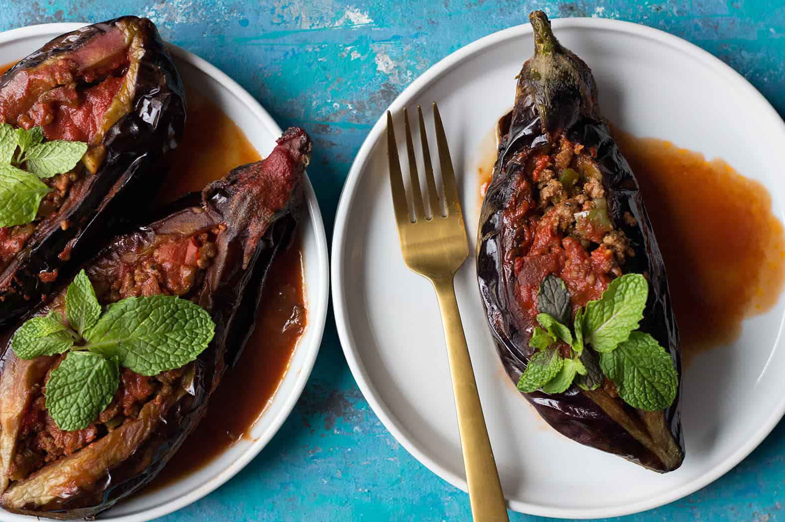

Karniyarik

This impressive dish is a legacy of the Ottoman Palace kitchens and yet another of the imperial demands for ingenuity concerning the much loved eggplant, aubergine, you will find this dish wherever you go in Turkey!
Though traditionally made with ground lamb, you may prepare it with ground beef or have a vegetarian version too. Simply replace the meat with your favorite vegetable (mushrooms, chickpeas work very well), this is generally called Imam Bayildi.
Prep Time
50 Minutes (Including 30 minutes Eggplant soaking time)
Cook Time
40 Minutes
Total Time
90 Minutes
Ingredients
Serves to 6 people
- 6 eggplants
- Quarter cup vegetable oil
- 2 tablespoon olive oil
- 2 onion chopped
- 5 cloves garlic minced
- 8 oz ground beef
- 1 green pepper diced
- 1 large tomato diced
- 1 tablespoon tomato paste
- Half a teaspoon salt
- Quarter teaspoon black pepper
Tomato Sauce
- 4 tablespoon tomato paste
- 1 cup boiling water
Instructions
- Prepare the eggplants by peeling strips on their skin. Keep the top on. Cut a slit in each eggplant without going all the way through.
- Fill a large bowl with cold water and add 1 teaspoon salt to the water. Stir and place the eggplants in the salt water. Soak them for 30 minutes.
- Meanwhile, heat 2 tablespoon olive oil in a pan over medium heat and saute onion until translucent. Add in minced garlic and cook until golden brown.
- Add in ground beef and brown it completely. Add diced green pepper and tomato to the ground beef mixture and cook for a few minutes.
- Add in tomato paste, salt and pepper to the filling and mix well.
- Discard the salt water and gently squeeze the eggplants. Dry them using a paper towel.
- Heat quarter cup vegetable oil in a pan over medium heat and fry the eggplants on all sides until they're soft and brown.
- Preheat the oven to 350F.
- Place them on a paper towel to absorb the excess oil.
- Place the fried eggplants in a baking dish and stuff them with the ground beef mixture.
- Make the sauce by mixing the tomato paste in water and spoon it over the eggplants and into the dish. Bake in the oven for 30 minutes until the eggplants are completely cooked and soft.
- Serve warm with white rice.
Home